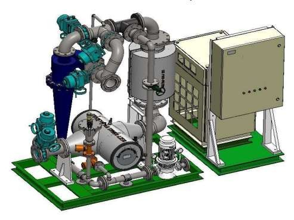
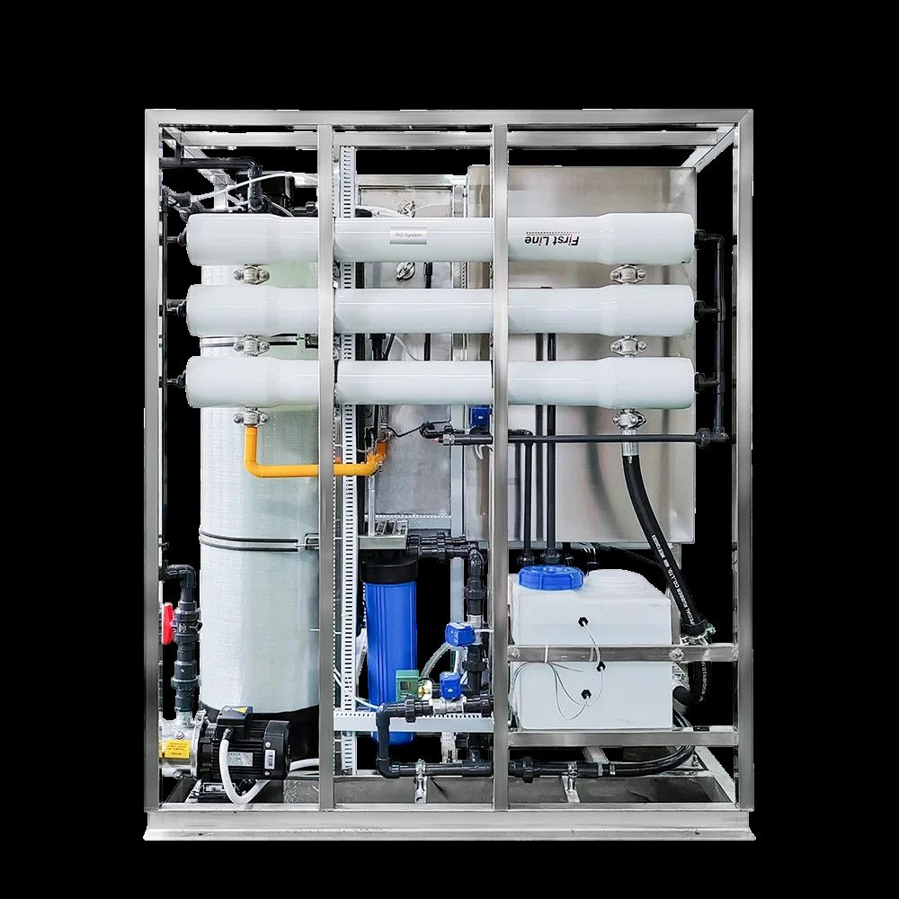
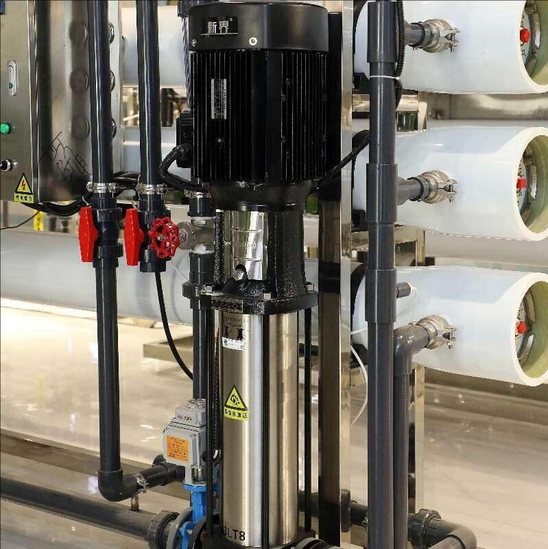

RO Industri Skala Besar
Sistem RO berkapasitas tinggi untuk pabrik, pembangkit listrik, dan fasilitas industri yang membutuhkan air proses berkualitas tinggi dalam volume besar.

RO Komersial & Gedung
Sistem RO terintegrasi untuk gedung bertingkat, hotel berbintang, pusat perbelanjaan, dan rumah sakit dengan desain compact dan efisien.

RO Mobile / Portable
Unit RO mobile yang dapat dipindah-pindah, ideal untuk proyek konstruksi, bencana alam, event, dan lokasi temporer yang membutuhkan air bersih segera.

RO Laboratorium
Sistem penghasil air ultra-murni Type I, II, dan III untuk kebutuhan laboratorium analitik, penelitian, dan kalibrasi instrumen ilmiah presisi.

SWRO — Desalinasi Air Laut
Sea Water Reverse Osmosis berkapasitas tinggi untuk kepulauan, resort pesisir, industri maritim, dan kawasan yang jauh dari sumber air tawar.

Ballast Water Management System (BWMS)
Sistem pengolahan air ballast kapal sesuai IMO BWM Convention 2004. Tipe Integrated & Distributed BSKY100, teknologi hydrocyclone + UV chemical-free.

Sistem Daur Ulang Air Limbah
Sistem daur ulang air limbah industri menggunakan kombinasi teknologi membran UF, MBR, dan RO untuk mencapai standar buang atau Zero Liquid Discharge.

Demineralisasi & EDI
Sistem Electrodeionization dan DI resin untuk produksi air ultra-murni kebutuhan farmasi, laboratorium, elektronik, dan boiler bertekanan tinggi.

Sistem UF & Microfiltration
Penyaringan membran UF dan MF untuk pre-treatment RO, pengolahan air minum, dan aplikasi industri makanan & minuman dengan standar tinggi.

Elemen Membran RO / NF / UF
Membran RO, NF, dan UF dari merek terkemuka dunia untuk penggantian elemen membran dengan performa optimal dan umur pakai maksimal.

Antiscalant, Biocide & CIP
Bahan kimia water treatment berkualitas tinggi: antiscalant untuk mencegah scaling, biocide untuk mencegah biofouling, dan CIP chemicals untuk pencucian membran.

Pompa & Pressure Vessel
Pompa high-pressure dari Grundfos, CAT Pumps, dan Danfoss. Pressure vessel FRP dari Code Line, Pentair, dan Codeline untuk berbagai kapasitas sistem RO.

Sensor & Instrumen Monitoring
TDS meter, conductivity meter, pH meter, flow meter, pressure transmitter, dan sistem monitoring online untuk pengawasan kualitas air secara real-time dan otomatis.
Lini Produksi Air Minum Dalam Kemasan
Solusi turnkey untuk pabrik AMDK: water treatment, ozonisasi, UV sterilization, dan filling cup, botol PET, atau gallon. Sesuai standar BPOM, SNI 3553, dan halal MUI.

Ozon Generator Industri
Ozon generator korona discharge dengan PSA oksigen untuk disinfeksi AMDK, kolam renang premium, oksidasi besi-mangan, dan air limbah. Kapasitas 1 g/jam – 10 kg/jam.
UV Sterilizer 254nm
Sistem disinfeksi UV-C untuk air minum, output RO, AMDK, kolam renang, dan air limbah. Lampu UV tier-1 Trojan/Atlantic/Wedeco. Dosis tervalidasi 40-100 mJ/cm² sesuai USEPA.